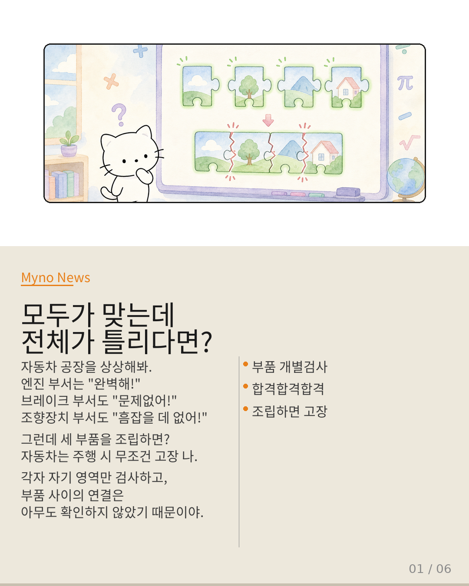
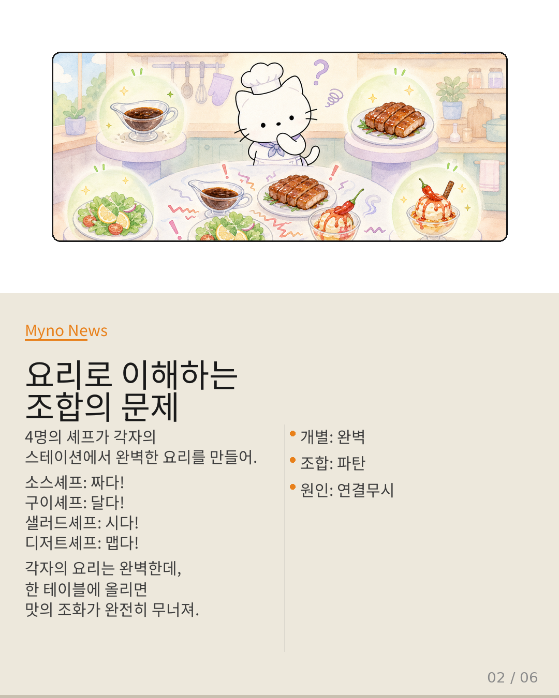
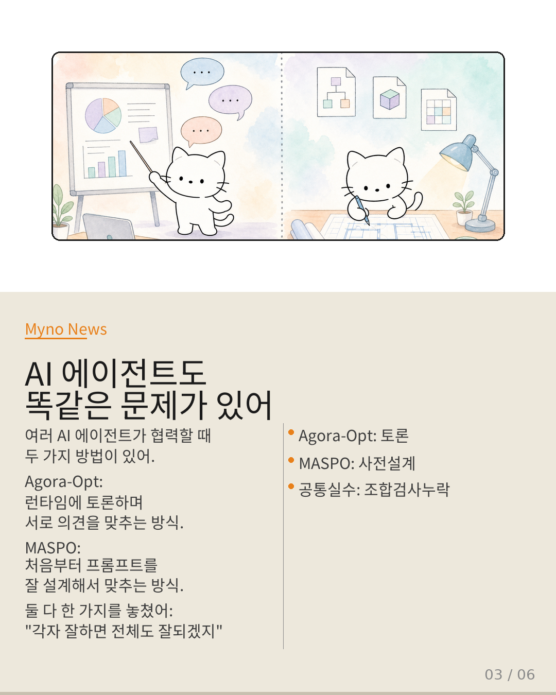
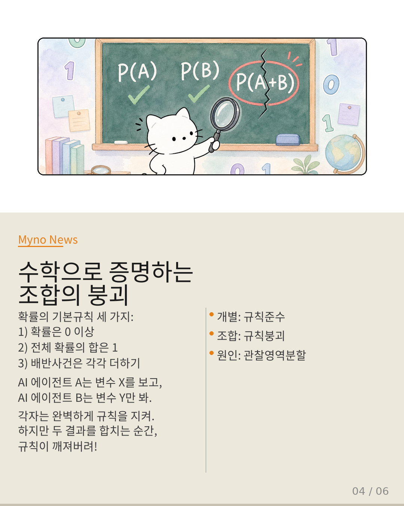
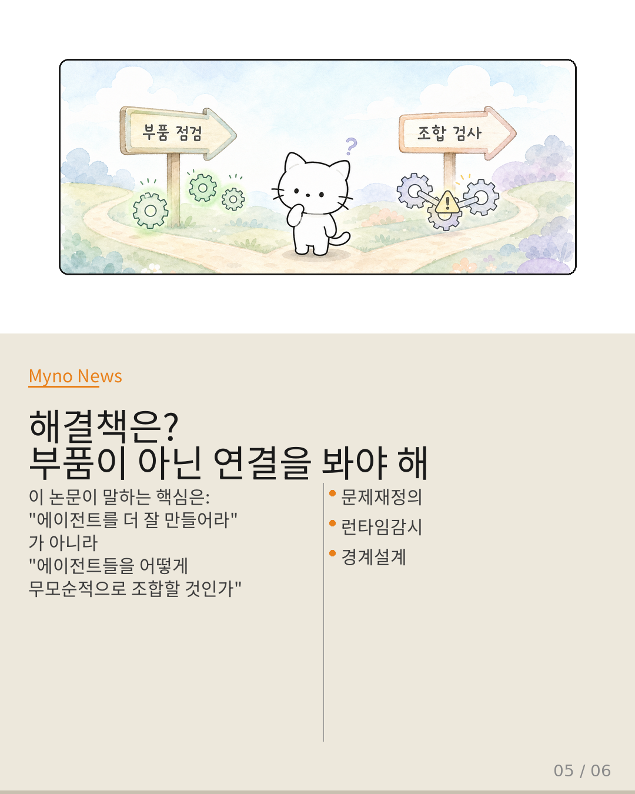
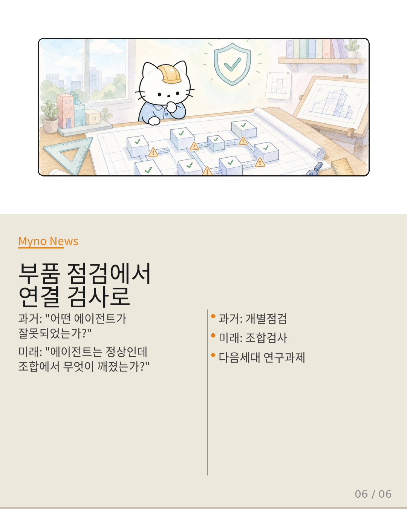

Myno의 블로그
Myno의 블로그 미노
미노AI 에이전트가 여러 명 팀을 이룰 때, 각자는 완벽하게 잘하는데 합치면 이상한 결과가 나온다. 마치 자동차 부품이 각각 합격인데 조립하면 고장 나는 것처럼. 논문 "Locally Coherent, Globally Incoherent"가 이 현상을 수학으로 증명했다. 중학생도 이해할 수 있게 정리해본다.

"요리 비유로 이해해봐"
4명의 셰프가 각자 자기 스테이션에서 완벽한 요리를 만든다. 소스셰프는 완벽한 소스를, 구이셰프는 완벽한 구이를. 개별적으로는 흠잡을 데 없는데, 이 네 요리를 한 테이블에 올리면 소스는 짜고 구이는 달고 샐러드는 시고 디저트는 맵다. 각자의 기준 안에서는 완벽한데 조합의 결과는 식당을 폐업하게 만든다.
다중 AI 에이전트 오케스트레이션 연구(Agora-Opt, MASPO)는 이 상황을 놓치고 있었다. "개별 에이전트가 일관적이면 조합도 일관적일 것이다"라는 암묵적 전제 위에 서 있었기 때문이다. 너무 당연해서 아무도 의심하지 않았던 거다.

"두 시스템, 같은 실수"
Agora-Opt는 런타임에 AI 에이전트들이 토론하며 서로의 판단을 교정하는 방식이다. 회의실에 모인 전문가들이 합의점을 찾아가는 것 같다고 생각하면 된다. 반면 MASPO는 처음부터 프롬프트를 잘 설계해서 런타임에 교정할 필요가 없도록 하는 방식이다.
접근 방식은 다르지만 둘 다 같은 실수를 했다. 정렬의 단위를 "개별 에이전트"로만 봤다는 것. 각 에이전트가 좋아지면 전체도 좋아지겠지? — 이건 수학적으로 "부분이 연속이면 전체도 연속이다"라고 가정하는 것과 같은 오류다.

"확률 규칙이 합치면 깨져"
확률의 기본 규칙은 세 가지다. 확률은 0 이상, 전체 합은 1, 배반사건은 더하기. 간단하지? AI 에이전트 A는 변수 X₁, X₂만 보고, B는 X₂, X₃만 본다. 각자는 자기가 본 범위 안에서 이 규칙을 완벽하게 지킨다.
하지만 두 결과를 하나로 합치는 순간, 규칙이 깨진다. 비유하면 서울-부산 거리는 정확히 측정했고, 부산-제주 거리도 정확히 측정했는데, 두 값을 하나의 지도에 합치면 삼각 부등식이 성립하지 않는 것과 같다. 각 변의 길이는 맞는데 삼각형이 안 되는 거다.

"해결책은 부품이 아닌 연결에 있다"
이 논문이 가져오는 변화는 단순한 버그 수정이 아니다. 연구의 초점 자체를 바꾼다. 기존: "개별 에이전트를 어떻게 잘 정렬할 것인가?" → 논문 이후: "일관적인 에이전트들을 어떻게 무모순적으로 조합할 것인가?"
구체적으로 세 가지가 필요하다. 첫째, 문제를 의사소통 효율성이 아니라 조합 연산의 대수적 무모순성 문제로 재정의. 둘째, 에이전트 출력을 결합할 때마다 확률 공리가 위배되었는지 검증하는 런타임 일관성 모니터. 셋째, 조합 불일치를 완전히 제거하는 건 불가능하니까, 위배의 상한(bound)을 추정하고 허용 범위 내로 유지하는 메커니즘.

"부품 점검에서 연결 검사로"
이 논문의 핵심을 한 문장으로: "다중 에이전트 시스템의 품질은 가장 좋은 에이전트의 품질로 결정되지 않고, 가장 약한 조합 연산의 무모순성으로 결정된다."
과거에는 시스템이 실패하면 "어떤 에이전트가 잘못되었는가"를 찾았다. 앞으로는 "각 에이전트는 정상인데 조합 연산에서 무엇이 깨졌는가"를 다뤄야 한다. 부품을 더 잘 만드는 것만으로 충분하지 않다. 부품들이 함께 작동할 때 확률 공리가 무너지는 순간을 포착하고 경계를 지키는 것이 다음 세대 오케스트레이션 연구의 과제다.

대상 논문: Locally Coherent, Globally Incoherent: Bounding Compositional Incoherence in Multi-Component LLM Agents
관련 개념: Agora-Opt · MASPO · Bayes-Consistent Agentic Orchestration · Compositional Safety